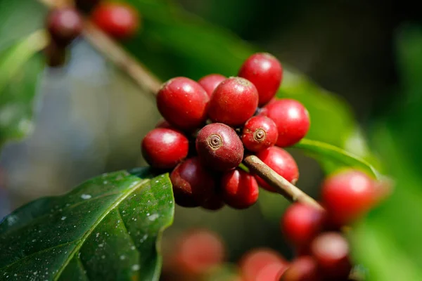
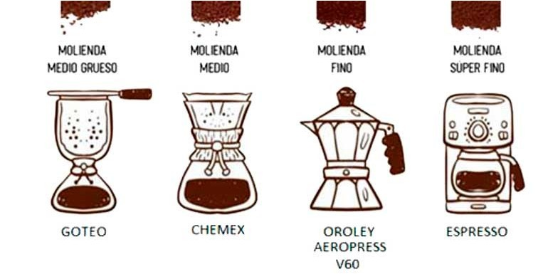
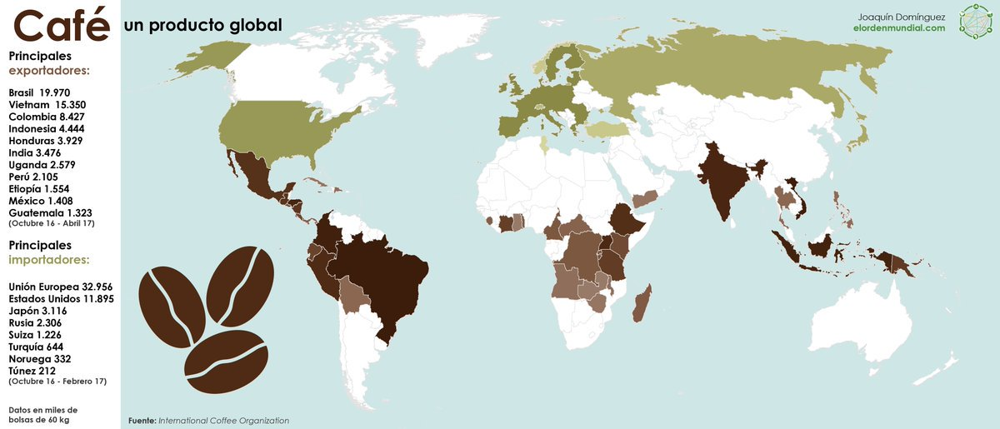

Esta es una pagina dedicada al café, la bebida mas consumida a nivel mundial, se estima que diariamente se beben entre 1,600 y 2 mil millones de tazas al día en el mundo.
El café siempre es una buena idea para cualquier hora del día, ya sea como bebida o acompañando algún postre.
La cafeína es el componente más importante del café, nada más tomar una taza, la cafeína actúa en el cerebro, bloqueando un neurotransmisor, la adenosina, que hace que aumenten otras sustancias como la dopamina o la norepinefrina, que aceleran la actividad cerebral, por lo que al tomarlo, no es de extrañar que te sientas mas despierto y lleno de vida.

Un poco de historia...
El café tiene una fascinante historia y su descubrimiento se remonta a siglos atrás. Se cree que el café fue descubierto en Etiopía, en la región de Kaffa, alrededor del siglo IX.
Según una popular leyenda, un pastor llamado Kaldi notó que sus cabras se volvían muy activas y llenas de energía después de comer las bayas de un arbusto en particular. Intrigado por este efecto, decidió probar las bayas él mismo y experimentó una sensación de vitalidad y alerta. Así fue como se dio cuenta del potencial estimulante de las bayas de café.

La noticia de estas bayas estimulantes se difundió rápidamente, y su consumo se extendió en la región. Las personas comenzaron a descubrir formas de procesar y preparar las bayas para aprovechar sus efectos energizantes. Inicialmente, las bayas se masticaban directamente o se mezclaban con grasa animal para formar bolas que se consumían como alimento energético.
Con el tiempo, se desarrollaron nuevas técnicas para el procesamiento de los granos de café. Se descubrió que al tostar los granos, se potenciaba su sabor y aroma. Además, se empezaron a utilizar métodos de extracción como la infusión y la filtración para obtener una bebida más refinada.

El café se convirtió en una importante parte de la cultura en la región de Etiopía, y su consumo se expandió hacia otras partes del mundo a través de rutas comerciales. Los mercaderes árabes fueron los responsables de llevar el café a la península Arábiga y, más tarde, a otros lugares como Persia (actualmente Irán) y el Imperio Otomano.
En Arabia, el café ganó popularidad y se establecieron las primeras cafeterías, conocidas como "qahveh khaneh". Estos lugares se convirtieron en puntos de encuentro para intelectuales, artistas y comerciantes, donde se discutían ideas, se jugaban juegos de azar y se disfrutaba de la bebida estimulante.
La fama del café se extendió aún más cuando los comerciantes venecianos lo llevaron a Europa en el siglo XVII. Desde entonces, el café ha ganado un lugar destacado en la cultura de numerosos países, con la apertura de cafeterías, la creación de diversas preparaciones y la celebración de rituales relacionados con el café.
En la actualidad
El descubrimiento casual de las propiedades estimulantes del café en Etiopía y su posterior difusión a través de las rutas comerciales han dejado una huella duradera en la historia y cultura del café, convirtiéndolo en una de las bebidas más populares y consumidas en todo el mundo.
